Introduction
GenRecon3D consolidates emerging directions at the intersection of generative modeling and geometric reconstruction. The workshop targets faithful recovery of underlying 3D and potentially 4D geometry from incomplete observations. Unlike approaches prioritizing visual plausibility, we emphasize metric accuracy, physical correctness, and principled uncertainty reasoning.
The program features invited talks, oral and poster presentations, and community discussions on evaluation protocols and robust benchmarks that assess geometric and semantic accuracy beyond visible surfaces.
Keynote speakers

Gordon Wetzstein is an Associate Professor of Electrical Engineering and, by courtesy, of Computer Science at Stanford University. He is the director of the Stanford Computational Imaging Lab and a faculty director of the Stanford Center for Image Systems Engineering. At the intersection of computer graphics and vision, artificial intelligence, computational optics, and applied vision science, Prof. Wetzstein's research has a wide range of applications in next-generation imaging, wearable computing, and neural rendering systems.

Katja Schwarz is an Senior Researcher at World Labs working on generative modeling and 3D vision. Her work spans neural representations for 3D inference from sparse observations and generative modeling in both 2D and 3D domains. She previously held research positions at Meta AI and completed her PhD in the Autonomous Vision Group at the University of Tübingen and the Max Planck Institute for Intelligent Systems.

Christian Rupprecht is an Associate Professor of Computer Science at the University of Oxford and a Tutorial Fellow at Magdalen College. His research focuses on unsupervised scene understanding in 2D, 3D, and 4D from images and videos and on representation learning for reconstruction and visual understanding without manual annotations.

Philipp Henzler is a Research Scientist at Google working on generative 3D AI and controllable video models. He completed his PhD at University College London, where his thesis received the Eurographics PhD Thesis Award. His research includes multi-modal generative modeling and methods related to 3D reconstruction and scene synthesis.
Recordings
Keynote talk recordings on YouTube.


Schedule
Half-day workshop schedule (local CVPR time). 4th of June. Room 603. Streaming link will be added when available.
| Time | Session | Duration |
|---|---|---|
| 13:00 to 13:15 | Welcome and introduction | 15 min |
| 13:15 to 14:00 | Keynote 1: Gordon Wetzstein | 45 min |
| 14:00 to 14:45 | Keynote 2: Katja Schwarz | 45 min |
| 14:45 to 15:30 | Oral session | 45 min |
| 15:30 to 16:20 | Poster session (boards #155 - #165) and coffee break | 50 min |
| 16:20 to 17:05 | Keynote 3: Christian Rupprecht | 45 min |
| 17:05 to 17:50 | Keynote 4: Philipp Henzler | 45 min |
| 17:50 to 18:00 | Closing remarks | 10 min |
Paper track
We accept (i) novel full 8-page papers (CVPR 2026 format) for publication in the proceedings, and (ii) shorter 4-page extended abstracts or full 8-page papers that will not appear in the proceedings. Extended abstracts may describe novel or previously published work, will not appear in the proceedings, and will be presented during the poster session if accepted.
Important dates
| Milestone | Date |
|---|---|
| Submission opens | February 1, 2026 |
| Submission deadline | March 20, 2026 |
| Notification to authors | March 31, 2026 |
| Camera-ready deadline | April 11, 2026 |
Submission portal: https://cmt3.research.microsoft.com/GENRECON2026/
Poster information
Posters should be 42" x 21" (W x H, aspect ratio 2:1, landscape format). Logos and poster templates for Main + Findings & Workshops are available at this Google Drive folder.
Feel free to use your own artwork, but we recommend a 3 or 4 column layout and using little text with few large, expressive figures. The poster should not be a copy-paste of your paper; rather, it should give you the tools to deliver a 5–10 minute presentation of your work to any attendee. We recommend looking at posters from previous years for inspiration.
Accepted papers
Oral presentations
- StaDy4D: Towards Complete 4D Reconstruction with SIGMA. Hao-Tang Tsui et al. Best paper award
- PersistGS: Differentiable Physics for Object Permanence in 4D Gaussian Splatting. Adrian Ramlal et al.
- TFDM: Time-Variant Frequency-Based Point Cloud Diffusion with State Space Model. Jiaxu Liu et al.
- How to Spin an Object: First, Get the Shape Right. Rishabh Kabra et al.
- SceneTok: A Compressed, Diffusable Token Space for 3D Scenes. Mohammad Asim et al. (invited)
- ArtiFixer: Enhancing and Extending 3D Reconstruction with Auto-Regressive Diffusion Models. De Lutio. (invited)
Poster presentations
- SPiRF4Humans: Spatio-Temporal Point Cloud Refinement Framework for Humans. Nikhil Akalwadi et al.
- Action-guided generation of 3D functionality segmentation data. Jaime Corsetti et al.
- PCM-NeRF: Probabilistic Camera Modeling for Neural Radiance Fields under Pose Uncertainty. Shravan Venkatraman et al.
- PhaseFlow4D: Physically Constrained 4D Beam Reconstruction via Feedback-Guided Latent Diffusion. Alexander Scheinker.
- Re-Depth Anything: Test-Time Depth Refinement via Self-Supervised Re-lighting. Ananta Bhattarai and Helge Rhodin. (invited)
- LevelingWorld: Leveling Up Feed-Forward 3D World Reconstruction with Geometry-Aware Generation. Yiming Huang et al. (invited)
- L-Tree: Single-View 3D Tree Reconstruction from Structure Masks via Hierarchical L-System Inference. Yihao Ang et al. (invited)
- LSD-3D: Large-Scale 3D Driving Scene Generation with Geometry Grounding. Julian Ost et al. (invited)
- From Synthetic Data to Real Restorations: Diffusion Model for Patient-specific Dental Crown Completion. David Pukanec et al. (invited)
- Stepper: Stepwise Immersive Scene Generation with Multiview Panoramas. Felix Wimbauer et al. (invited)
- CRAG: Can 3D Generative Models Help 3D Assembly? Jing Zhang. (invited)
- Lyra 2.0: Explorable Generative 3D Worlds. Ren et al. (invited)
- DynaTok: Token-Based 4D Reconstruction from Partial Point Clouds. Weirong Chen. (invited)
Organizers


Example papers within scope
The following papers illustrate representative directions aligned with the workshop theme of faithful generative 3D reconstruction. This list is non-exhaustive and provided for reference only.
-
Object-X: Learning to Reconstruct Multi-Modal 3D Object Representations
Di Lorenzo, Gaia, Federico Tombari, Marc Pollefeys, and Daniel Barath. NeurIPS 2025. -
Gen3c: 3d-informed world-consistent video generation with precise camera control
Ren, X., Shen, T., Huang, J., Ling, H., Lu, Y., Nimier-David, M., Müller, T., Keller, A., Fidler, S. and Gao, J., CVPR 2025. -
Flowr: Flowing from sparse to dense 3d reconstructions
Fischer, T., Bulò, S.R., Yang, Y.H., Keetha, N., Porzi, L., Müller, N., Schwarz, K., Luiten, J., Pollefeys, M. and Kontschieder, P., 2025. CVPR 2025. -
Difix3d+: Improving 3d reconstructions with single-step diffusion models.
Wu, Jay Zhangjie, Yuxuan Zhang, Haithem Turki, Xuanchi Ren, Jun Gao, Mike Zheng Shou, Sanja Fidler, Zan Gojcic, and Huan Ling. CVPR 2025.
Photos
A few moments from the workshop. Click any photo to enlarge.
{kind=link}
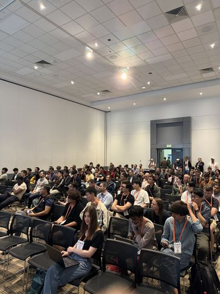
{kind=link}
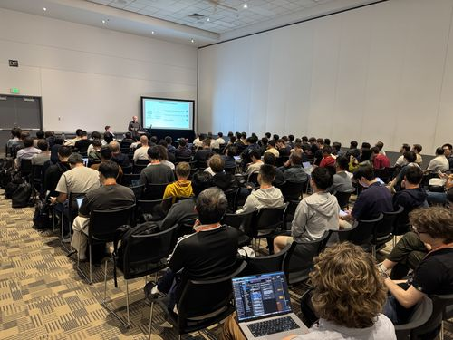
{kind=link}
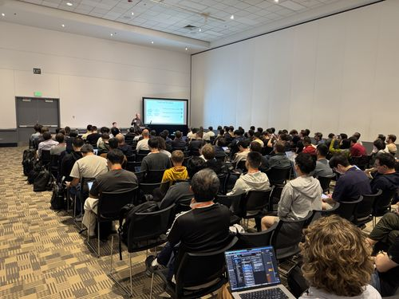
{kind=link}
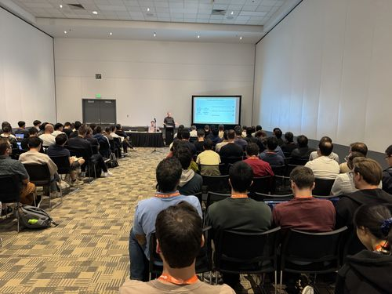
{kind=link}
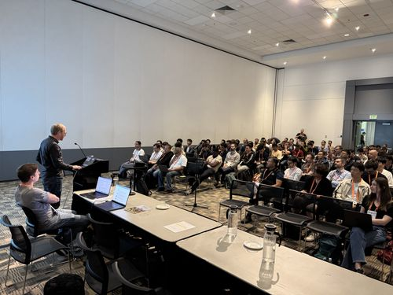
{kind=link}
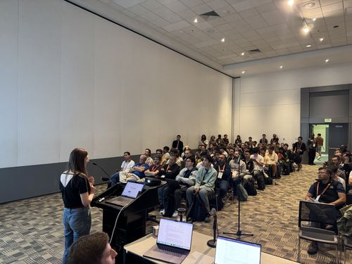
{kind=link}
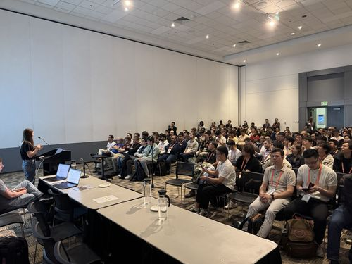
{kind=link}
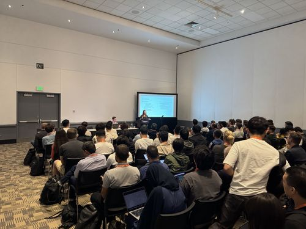
{kind=link}
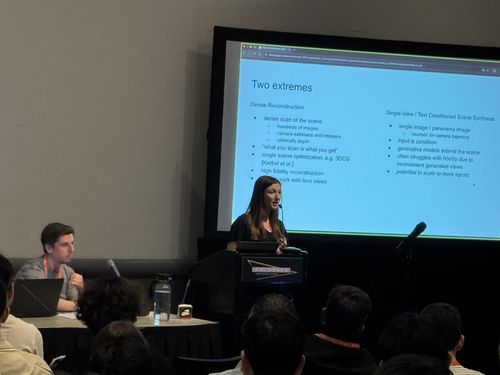
{kind=link}
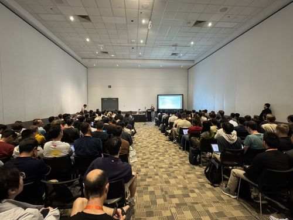
{kind=link}
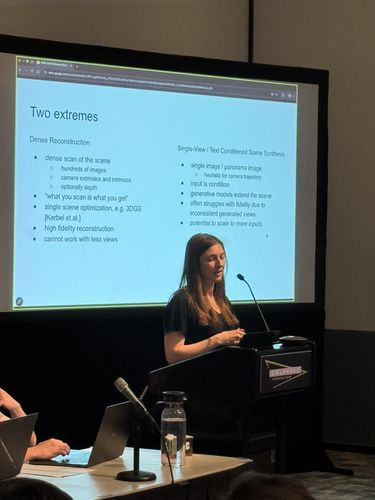
{kind=link}
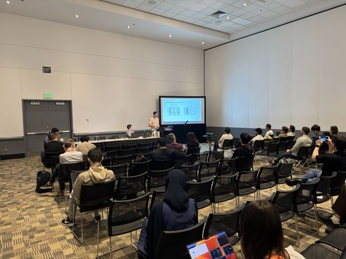
{kind=link}
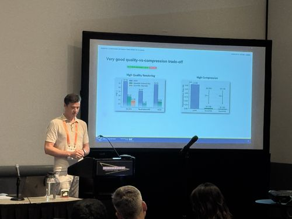
{kind=link}
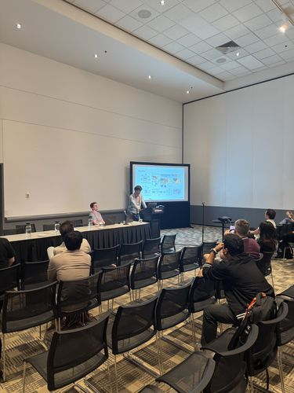
{kind=link}
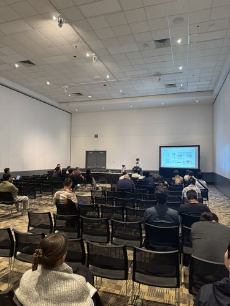
{kind=link}
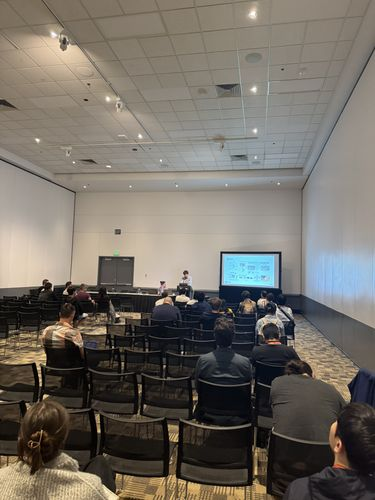
{kind=link}
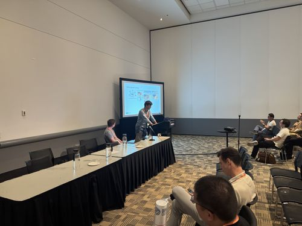
{kind=link}
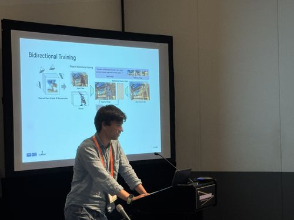
{kind=link}
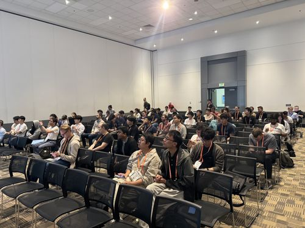
{kind=link}
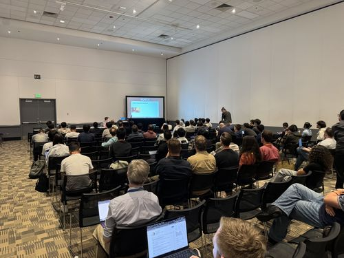
{kind=link}
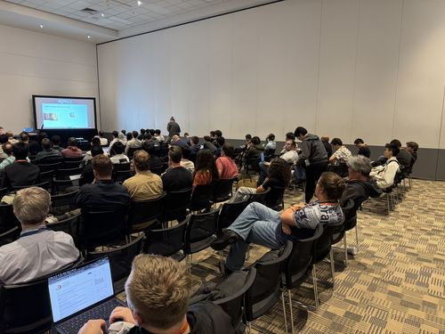
{kind=link}
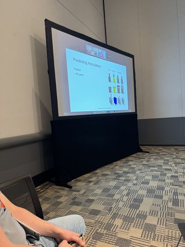
{kind=link}
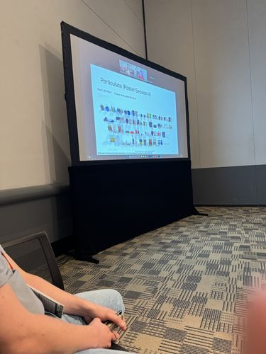
{kind=link}
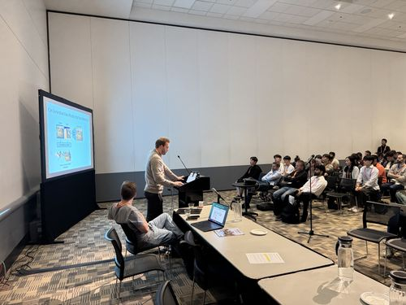
{kind=link}
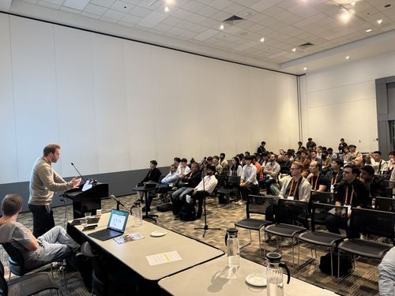
{kind=link}
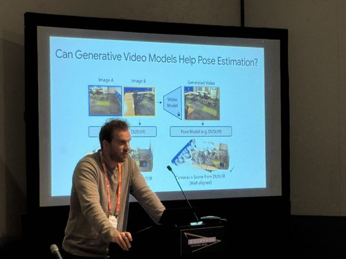
{kind=link}
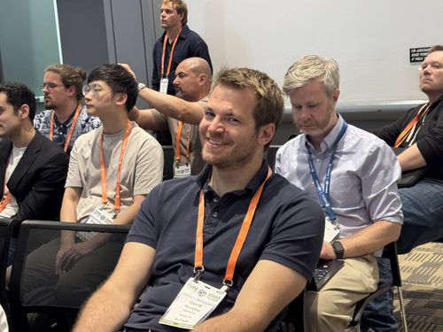
{kind=link}
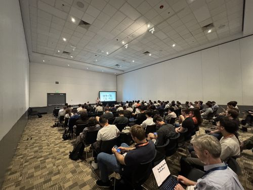
{kind=link}
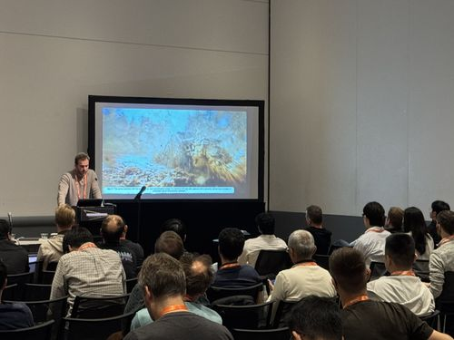
{kind=link}
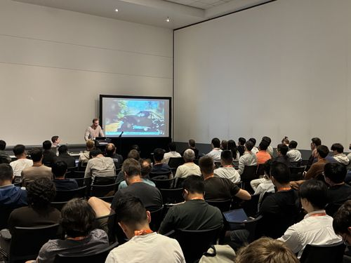
{kind=link}
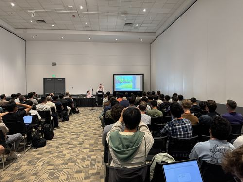
{kind=link}
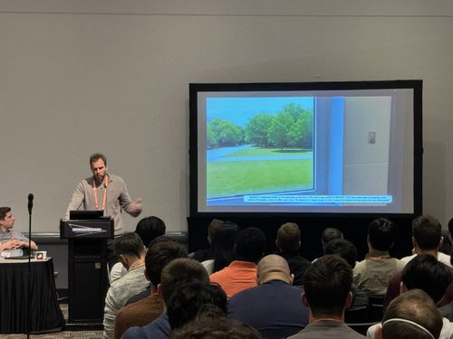
Contact
Daniel Barath (dbarath@ethz.ch) or Fabian Manhardt (fabianmanhardt@google.com).